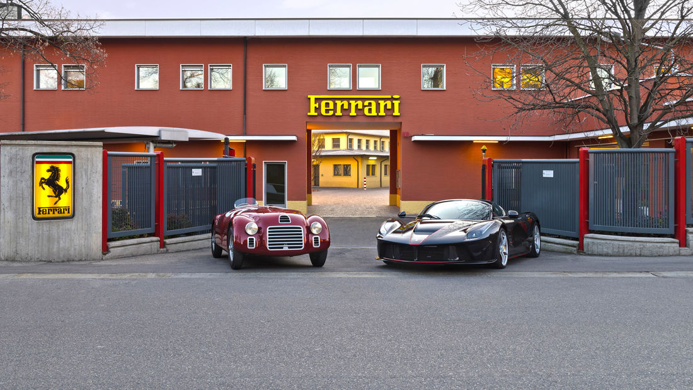
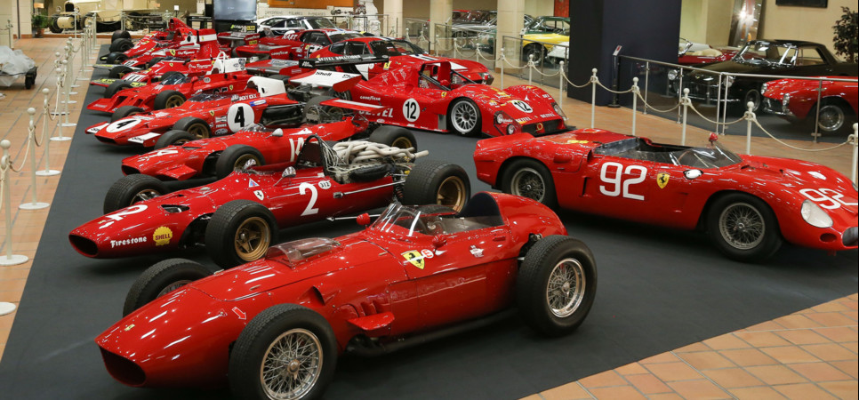
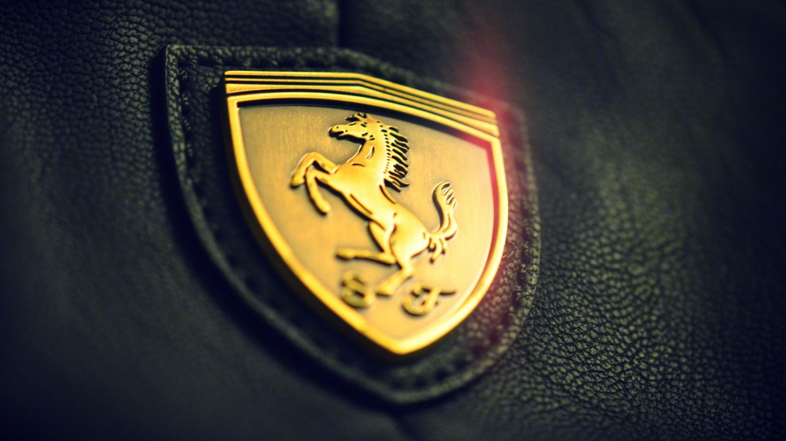

Die Scuderia Ferrari

{kind=link}
Ferrari ist ein italienischer Automobilhersteller von Sportwagen und Formel-1-Fahrzeugen mit Rechtssitz in Amsterdam und Verwaltungssitz in Maranello in der italienischen Provinz Modena.[1][3][4] Das Unternehmen wurde 1947 vom ehemaligen Rennfahrer Enzo Ferrari gegründet und gehörte bis 2016 mit rund 80 Prozent[5] zu Fiat Chrysler Automobiles. Der Börsengang von Ferrari an der New York Stock Exchange erfolgte am 21. Oktober 2015 durch den Verkauf von neun Prozent der Aktien des Hauptaktionärs FCA.[6] Die restlichen Aktien wurden mit Ablauf des 3. Januar 2016 in Form eines Spin-offs an die Aktionäre von Fiat Chrysler Automobiles verteilt. Am nächsten Tag wurde die Ferrari-Aktie als Zweitlisting an der Mailänder Börse notiert. Heute wird sie im Leitindex FTSE MIB gelistet. Die deutsche Niederlassung befindet sich in Wiesbaden, diese ist außerdem für das Mittel- und Osteuropa-Geschäft zuständig.
Geschichte

{kind=link}
Die Ursprünge des Unternehmens gehen zurück auf das Rennteam Scuderia Ferrari, das von 1929 bis 1938 unter der Leitung von Enzo Ferrari unter anderem als Werksteam von Alfa Romeo sehr erfolgreich Autorennen fuhr, ohne selbst Fahrzeuge zu bauen. Schon zu diesen Zeiten wurde das heute noch benutzte Logo verwendet: ein sich aufbäumendes Pferd, das cavallino rampante. 1940 wurde die Scuderia in „Auto Avio Costruzioni Ferrari“ umbenannt und zog 1943 nach Maranello um, wo sie bis heute ihren Hauptsitz hat. Die Fabrik wurde 1944 durch einen Bombenangriff zerstört und 1946 wieder aufgebaut. Der erste „echte“ Ferrari war der 1947 gebaute Ferrari 125 C Sport mit einem 1,5-Liter-V12-Motor. Ferrari baute damals in erster Linie Rennwagen für Sportwagenrennen wie die Mille Miglia, die auch an Kunden verkauft wurden, um Geld zu verdienen. Daraus entwickelten sich Straßenwagen, die nicht für den Renneinsatz geeignet waren. Für außergewöhnliches Styling aus dem Haus Pininfarina bekannt, sind und waren die Autos von Ferrari beliebt bei den 'Reichen und Schönen'. Neben Pininfarina wurden auch Scaglietti, Bertone und Vignale mit dem Design von Ferraris beauftragt. Ferrari befand sich öfter in Krisen. Schon in den 1960er Jahren machte Ford ein Übernahmeangebot, das abgelehnt wurde, worauf der Ford GT40 Ferraris bisherige Vorherrschaft bei den Sportwagenrennen brach. Der Einstieg von Fiat 1969 mit 50 Prozent[8] erbrachte die Finanzen für eine teure Antwort auf den Porsche 917 durch den Bau von 25 Exemplaren des Ferrari 512S, aber erst 1972/73 waren die Sportwagen wieder siegreich. Danach stellte Ferrari diese Art von Rennsport ein, zumal das F1-Team 1973 desolat war und einige Rennen aussetzen musste. In den USA hatten Sicherheits-, Verbrauchs- und Abgas-Vorschriften ab den 1970er Jahren die Sportwagen geradezu „kastriert“ und den Absatz einbrechen lassen. Erst mit dem Tod des Gründers Enzo Ferrari 1988 gab es einen Nachfrage-Boom, insbesondere nach Klassikern, samt Beschwörung des Mythos Ferrari, da sich manch einer nicht vorstellen konnte, dass auch ohne Enzo Ferrari weiterhin Ferraris entstehen konnten[9]. Mit den Erfolgen in der Formel 1 bekam ab 1996 die Marke endgültig wieder Oberwasser. Für sportliche Amateure hatte Ferrari jedoch seit Mitte der 1960er Jahre kaum noch geeignete Wagen im Angebot. Erst in jüngerer Zeit wurden Rennversionen der V8-Modelle (Ferrari 360) entwickelt, mit denen sich Kunden-Teams außer im Ferrari-Markenpokal auch der Konkurrenz bei Langstreckenrennen stellen konnten. Am 4. November 2010 wurde unter dem Namen Ferrari World in Abu Dhabi im gleichnamigen Emirat ein 25 Hektar großer Themenpark rund um das schnelle Autofahren eröffnet. Er dient vor allem den Ferrarifreunden und potentiellen Kunden im Nahen Osten als Einstimmung auf die Sportwagenmarke. Am 29. Oktober 2014 kündigte die neu gegründete Fiat Chrysler Automobiles (FCA) an, ihre 90-Prozent-Beteiligung an Ferrari im Jahr 2015 abzugeben. Zehn Prozent der Aktien sollten an die Börse gebracht, die restlichen 80 Prozent an die Aktionäre von FCA ausgegeben werden. Diese können nach dem Ferrari-Börsengang dann ebenfalls über die Börse verkauft werden.[10] Zehn Prozent an Ferrari hält unverändert Enzo Ferraris Sohn Piero Ferrari.[11] Im Verlauf der Covid-19-Pandemie im Jahr 2020 stellte Ferrari Einzelteile für Beatmungsgeräte her.
Das Cavallino rampante (dt. sich aufbäumendes Pferdchen)

{kind=link}
Das Emblem der Marke ist ein schwarzes Pferd auf gelbem Grund, mit den Buchstaben S F für „Scuderia Ferrari“ (deutsch: Rennstall Ferrari). Das Pferd war ursprünglich das Symbol von Baron Francesco Baracca, einem Fliegerass der Aeronautica Militare im Ersten Weltkrieg. Baron Baracca wurde am 19. Juni 1918 nach 34 siegreichen Luftkämpfen abgeschossen und avancierte schnell zum Nationalhelden. Er ließ das Pferd auf die Flugzeuge seiner Fliegergruppe malen, weil es im Wappen des Kavallerieregiments Piemonte Cavalleria war, dem er angehört hatte. Die Militäreinheit, in der Enzo Ferraris Bruder, Dino, im Ersten Weltkrieg kämpfte und fiel, hatte das springende Pferd ebenfalls im Wappen. Eine weitere unbewiesene Theorie ist die, dass Baracca das Pferd von einem deutschen Piloten, der das sehr ähnliche Wappen der Stadt Stuttgart auf seinem Flugzeug trug, kopierte. Der deutsche Automobilhersteller Porsche hat ebenfalls das Stadtwappen seines Standortes Stuttgart-Zuffenhausen in sein Markenzeichen integriert. 1923 gewann Enzo Ferrari ein Autorennen in Ravenna und traf die Contessa Paolina Biancoli, die Mutter Baraccas. Von ihr erhielt er die Anregung, das Pferd als Emblem zu verwenden. Allerdings durfte das Logo erst ab dem Rennen n Spa-Francorchamps 1932 an den von der Scuderia Ferrari verwendeten Alfa Romeos benutzt werden. Der gelbe Hintergrund wurde von Enzo Ferrari hinzugefügt, weil es die Farbe seiner Heimatstadt Modena, dem damaligen Sitz des Unternehmens, war. Oft wird jedoch auch behauptet, dass Enzo Ferrari die Farbe wegen seiner Vorliebe für Sonnenblumen verwendete. Das Pferd steht übrigens nicht nur für Ferrari. Fabio Taglionis Unternehmen Ducati benutzte es ebenfalls für seine Motorräder. Taglionis Vater war ein Freund von Baron Baracca und flog in seiner Gruppe, der 91ª Squadriglia des 4º Stormo. Nachdem Ferrari berühmt geworden war, verschwand das Pferd als Logo für Ducati, und es wird vermutet, dass die beiden Firmen ein Abkommen über die Nutzung eingingen. Heute ist das Pferd ein eingetragenes Warenzeichen für Ferrari. Die Tankstellenkette Avanti benutzt in Österreich und Osteuropa ein fast identisches Logo samt schwarz-gelben Farben. Der schwedische Gitarrist und Ferrari-Fan Yngwie Malmsteen nannte den zweiten Satz seiner Concerto Suite for Electric Guitar nach dem Ferrari-Wappen Cavallino rampante.
Absatz
Umsatz und Jahresproduktion belief sich im Jahr 2008 auf 6.452 Fahrzeugeinheiten und fast 3,5 Mrd EUR. 2010 wurden 6.500 Fahrzeuge verkauft, so viel wie nie zuvor. 2011 wurde dieser Rekord mit 7.000 Fahrzeugen eingestellt. 28 Prozent der verkauften Fahrzeuge gingen in die USA.[14] Das Jahr 2019 war mit 10.131 verkauften Fahrzeugen das bisher erfolgreichste in der Geschichte von Ferrari.[1] Einer Studie des deutschen Wirtschaftswissenschaftlers Ferdinand Dudenhöffer zufolge, erwirtschaftete Ferrari (im ersten Halbjahr 2018) etwa 69.000 Euro Betriebsgewinn pro verkauftem Fahrzeug. Damit ist Ferrari der profitabelste aller untersuchten Automobilhersteller.